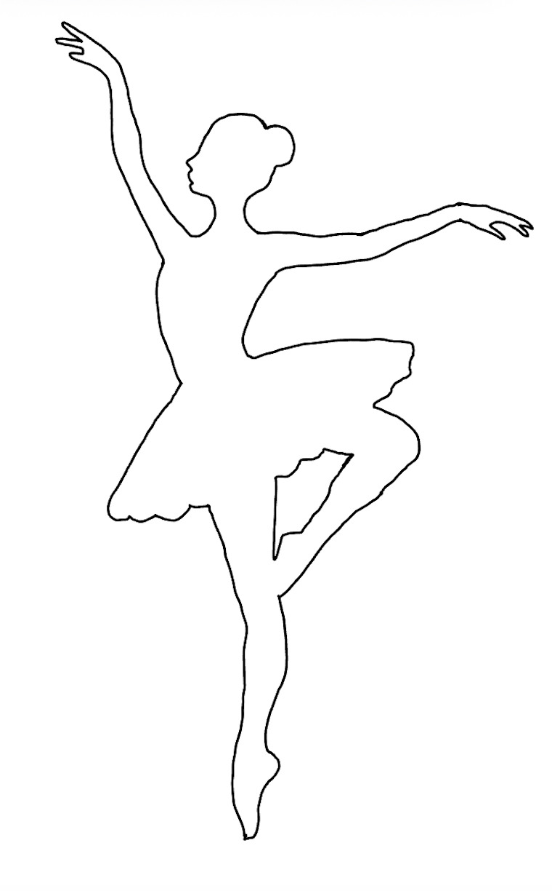
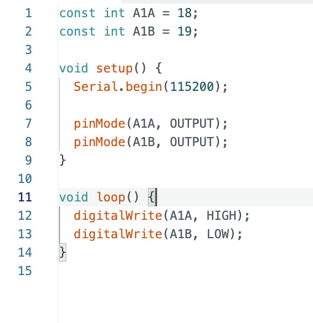
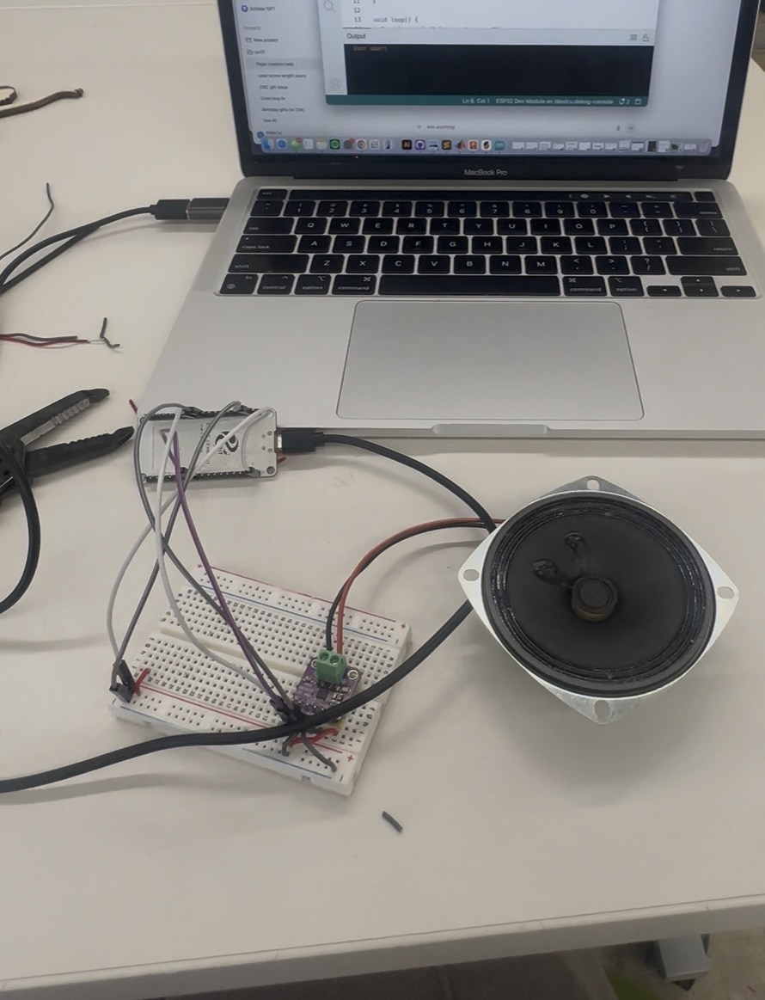
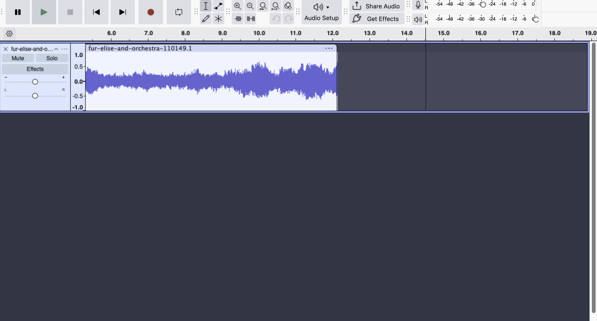
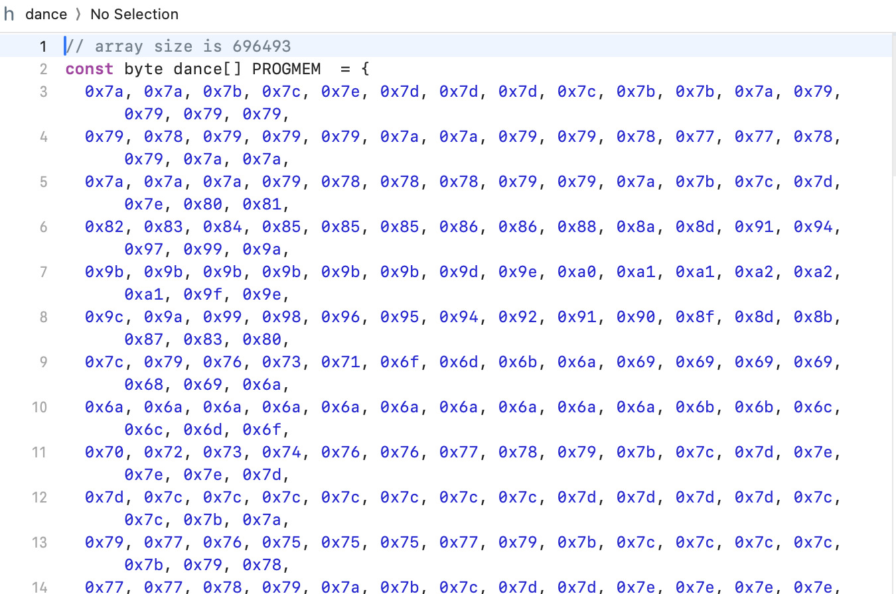
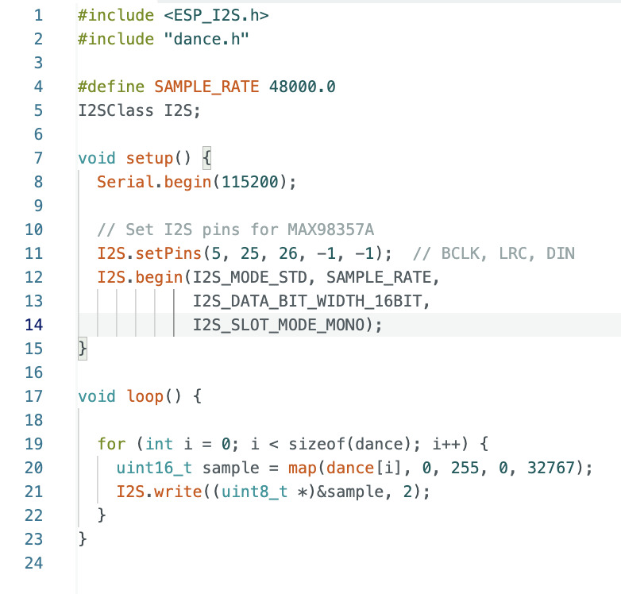

Week 4: Microcontroller
Ballerina Dancing to Beethoven’s Für Elise
For this week’s assignment, I created a different kinetic sculpture of a ballerina dancing to Beethoven's Für Elise. I first began by creating the ballerina, designing an outline, importing the outline into Fusion 360, and creating a sketch. I laser cut the dxf file and painted the ballerina.Here is the ballerina design.
Then, I 3D printed a connector between the motor, which will cause the ballerina to rotate, and the dowel, which the ballerina would be attached to. Here is an image of a slice of the connector.

Using the same code from last week’s kinetic sculpture assignment, I was able to get the motor to rotate continuously using an ESP32 microcontroller, a motor driver, and a motor. From the ESP32 to the motor driver, I connected the GPIO18 to A1-A, GPIO19 to A1-B, 5V to VCC, and GND to GND. I also connected the motor’s positive and negative wires to the motor driver. Here is the snippet of code I used.
After I got the motor to rotate, I began working on the speaker. I used an ESP32 microcontroller, a MAX98357A amplifier, and speaker. From the amplifier to the ESP32, I connected the LRC to GPIO25, BCLK to GPIO5, DIN to GPIO26, VCC to 3.3V, GND to GND, and GAIN to GND. I also connected the speaker’s positive and negative wires to the amplifier. Here is an image of the speaker set up.
I could only find Beethoven's Für Elise in the form of an mp3, and I needed it to be a .h file. I converted the sound file from an mp3 to a WAV using Audacity. I changed the project rate to 48,000 Hz, changed the track type to Mono, and cut down the music snippet to 12 seconds. Here is the final WAV file in Audacity.
I then converted the WAV to a .h file so that it could be played through the ESP32 and MAX98357A amplifier. Here is part of the .h file.
I then tested if the speaker played Beethoven's Für Elise. Here is the code I used, modeled after music test code I found in examples.
After I heard the music snippet play, I combined the two snippets of code so that the ballerina would rotate to the music. Here is a video of my ballerina dancing.
Here is a circuit schematic